عرّفْ نفسك مرّةً واحدة
اسمُك بالعربيّة والإنجليزيّة، وسنةُ التحاقك، وتخصّصُك من عشرين برنامجاً في الجامعة. ومنها تُرسم موادُّك من أوّل مستوًى إلى التخرّج.
افتحها في الحديقة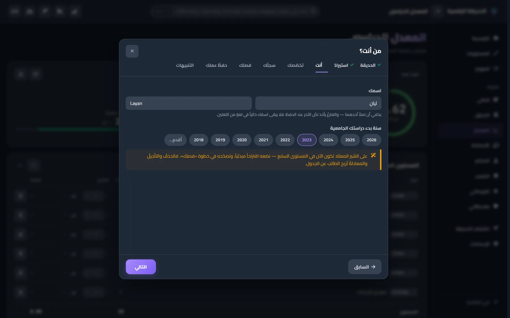
منصّةٌ يبنيها طالبٌ لطلاب جامعة الأمير مساعد بن عبدالرحمن
تابعْ طالبةً واحدةً عبر فصلٍ كامل: تبني جدولها، وتدرس، وتدوّن محاضراتها، وتراقب معدّلها، ثمّ تبدأ فصلها القادم بخطّةٍ أوضح. كلُّ شاشةٍ هنا من الحديقة نفسِها.
قبل أن يبدأ الفصل
دقيقتان تكفيان لتعرف الحديقةُ تخصّصك وخطّتك وما أتممته، فتبدأ من مكانك الصحيح لا من الصفر.
اسمُك بالعربيّة والإنجليزيّة، وسنةُ التحاقك، وتخصّصُك من عشرين برنامجاً في الجامعة. ومنها تُرسم موادُّك من أوّل مستوًى إلى التخرّج.
افتحها في الحديقة
علّمْ ما اجتزتَه ودرجتَه إن شئت، فيبدأ معدّلُك وخطّتُك من حيث أنت. والمعالجُ يعرف المتطلّبات، فلا يعرض لك إلا ما يصحّ تسجيلُه.
افتحها في الحديقة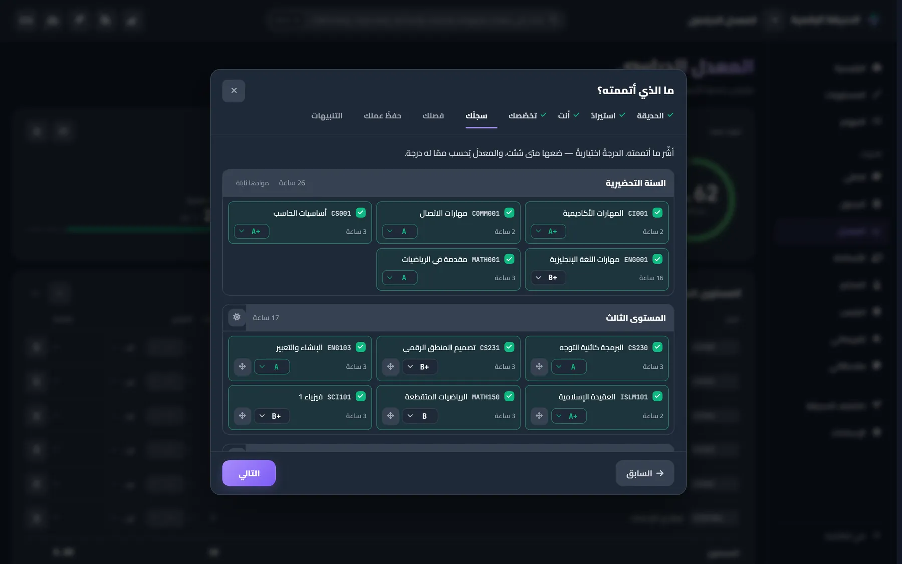
محاضراتُ اليوم، والمهامُّ القادمة، والبطاقاتُ المستحقّة، ومعدّلُك، وعدٌّ تنازليٌّ لأقرب اختبار. ورتّبْها كما تحبّ من زرّ «تخصيص».
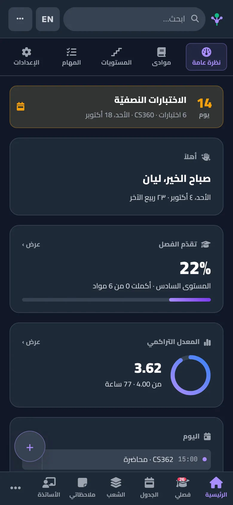
الأسبوعُ الأوّل
من البحث عن الشعب إلى جدولٍ كاملٍ وتنبيهاتٍ تصلك والموقعُ مغلق، ببيانات البانر الحيّة.
ابحثْ عن عدّة موادَّ معاً بفاصلة، ورشّحْ بالمدينة والطريقة والأيّام والمقاعد. وكلُّ شعبةٍ تحمل تقييمَ أستاذها وحالةَ مقاعدها، حتّى ما يخفيه البانر.
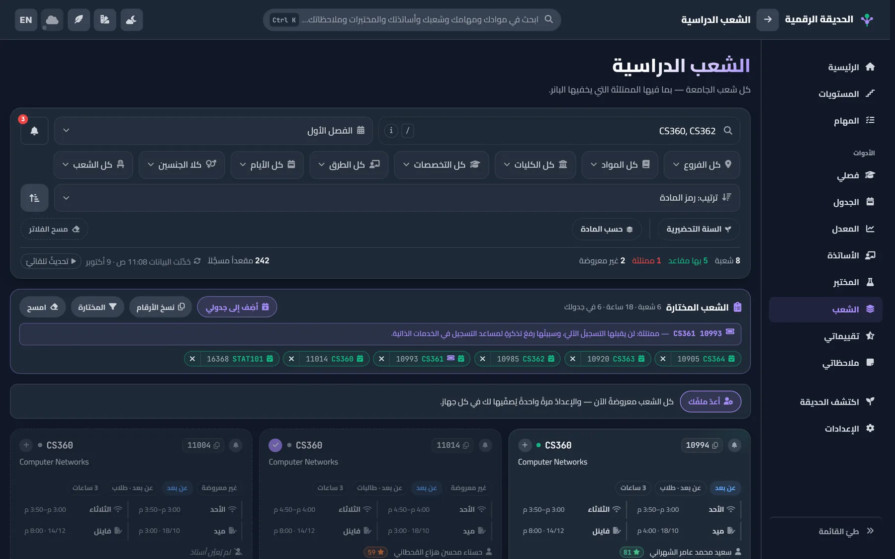
جرسٌ على الشعبة ينبّهك حين يتوفّر مقعد، وسجلُّ تغييراتها يخبرك إن قُسّمت أو انتقلت. وسلّةُ الاختيار تكشف تعارضَ الأوقات قبل أن تضيفها إلى جدولك بضغطة.
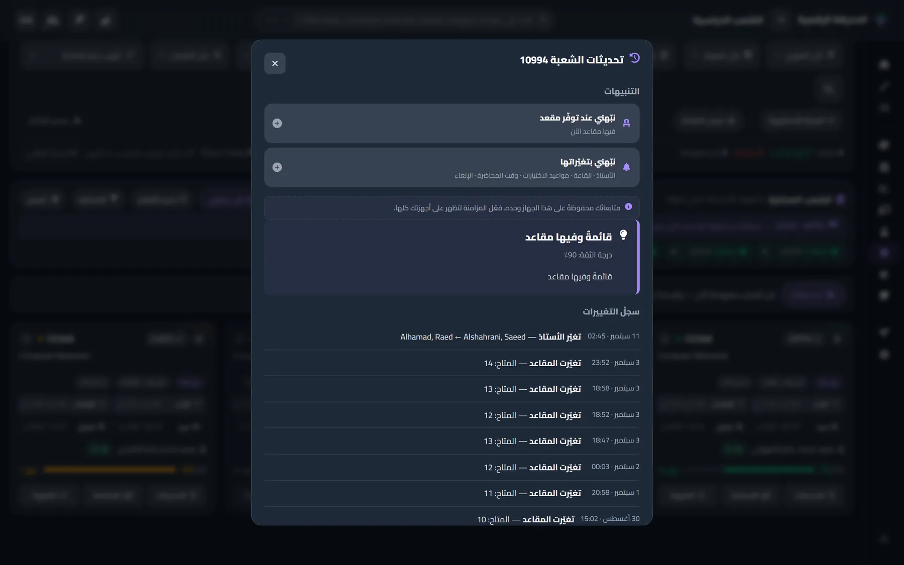
مؤشّرٌ مركّبٌ من آراء الطلاب على خمسة محاور: الوضوح وعدالة التصحيح وسرعة الردّ ورصد الدرجات والتجربة كلّها. ولا يُعلن مؤشّرُ أستاذٍ قبل ثلاثة آراء.
افتحها في الحديقة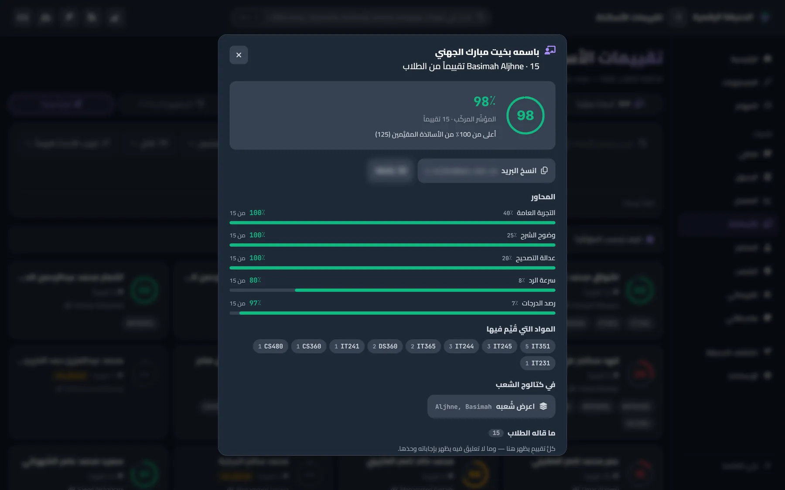
أسبوعُك من خمسة عشر، والقادمُ من اختباراتٍ وتسليمات، وإيقاعُك في كلِّ مادّة: هل أنت في موعدك أم متأخّرٌ قليلاً؟
افتحها في الحديقة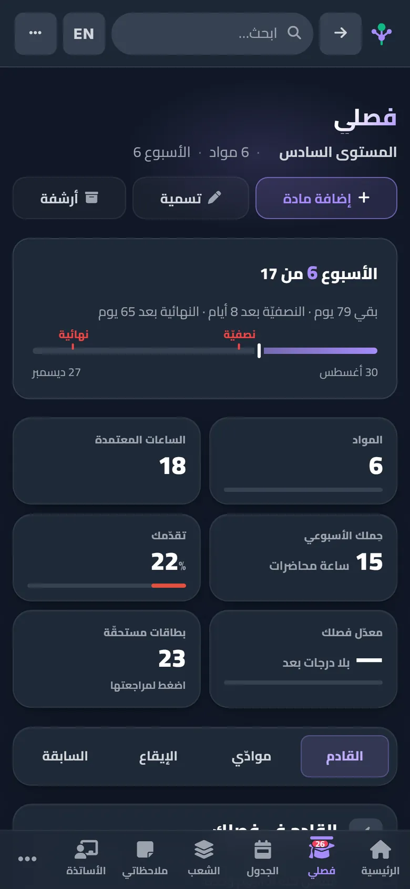
اربطْ تقويمَ البلاك بورد مرّةً، فتدخل كويزاتُك وواجباتُك بموادّها وتتحدّث كلَّ يوم. وما صحّحتَه بيدك يبقى كما كتبتَه، ويخبرك الجدولُ إن غيّره البلاك بورد بعدك.
قبل المحاضرة والاختبار والتسليم بالمدّة التي تختارها، على كلِّ أجهزتك ولو كان الموقعُ مغلقاً. وهدوءٌ ليليٌّ، وأزرارُ غفوةٍ على الإشعار نفسِه.
افتحها في الحديقة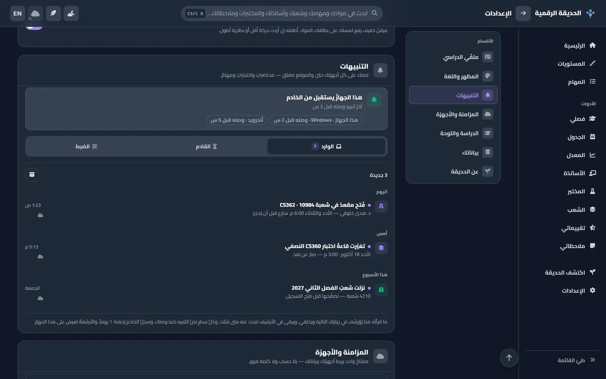
من الأسبوع الثاني إلى الرابع عشر
357 وحدةً في 28 مادّة، لكلِّ مفهومٍ ثلاثةُ أعماق، وتسعةُ تصاميمَ للمذاكرة، وشرحٌ بالذكاء يعرف مادّتك.
ما عليك اليوم، وإتقانُك وحدةً وحدة، وأستاذُك وشعبتُك، و«توقّعُ النجاح» محسوباً من محاولاتك أنت مع دليلٍ يشرح كيف حُسب.
افتحها في الحديقة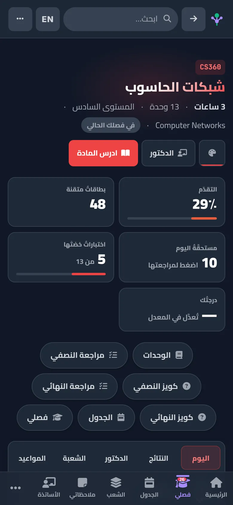
كلُّ مفهومٍ بثلاثة أعماق، ورسومٌ بلغتين، ومصطلحاتٌ تُشرح بلمسة، وفيديوهاتٌ مختارةٌ لأصعب المواضيع.
افتحها في الحديقة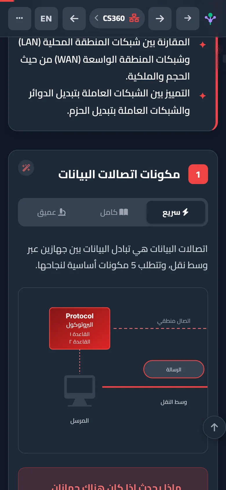
حدّدْ جملةً أو بطاقةً أو رسمة، واطلبْ تبسيطاً أو مثالاً محلولاً أو «لماذا؟» أو «للامتحان». وإن لم تفهم بعدُ فقلْها، فيعيد الشرحَ بأبسط.
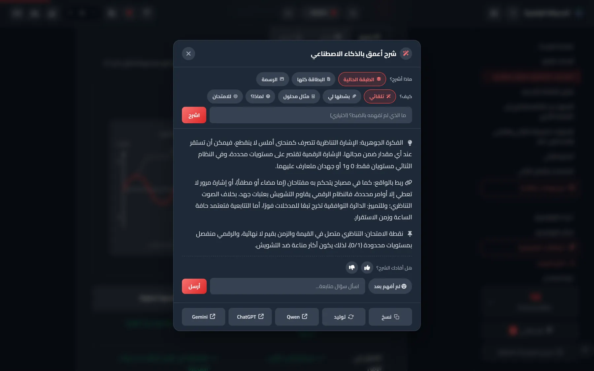
تسعةُ تصاميمَ للصفحة نفسِها: «الخلاصة» الوحدةُ كلُّها في ورقةٍ تطبعها، و«تمرين» يسألك بعد كلِّ مفهوم، و«الاستذكار» يغطّي النصَّ لتتذكّره، و«المصباح» يضيء ما تقرؤه وحده. ومعها 18 لوناً و29 خطّاً للقراءة.
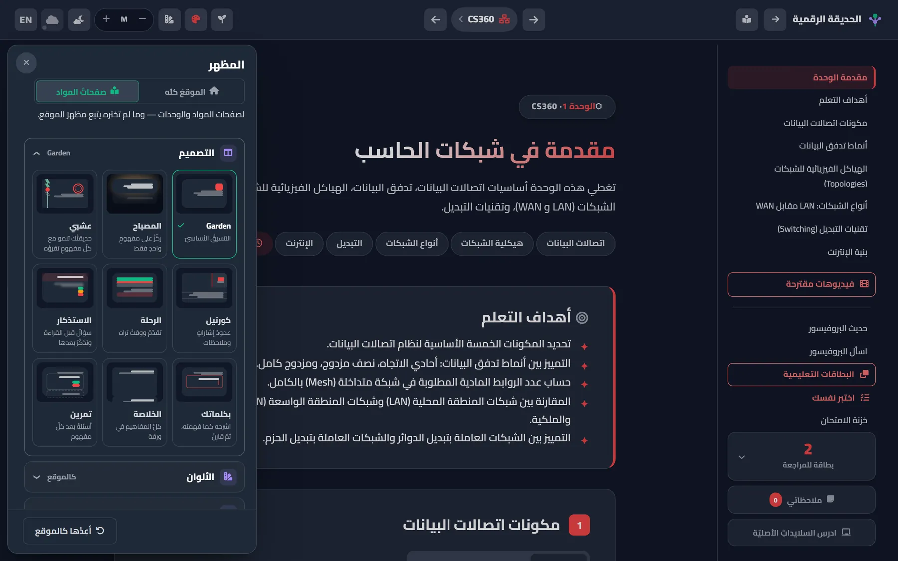
في تصميم «بكلماتك» تكتب كلَّ مفهومٍ كما فهمتَه، ثمّ «قارِنْ» فيعرض خلاصةَ الصفحة ويسمّي المصطلحاتِ التي استعملتَها والتي فاتتك. وفي آخر الوحدة ورقتُك كاملةً تحفظها في ملاحظاتك.
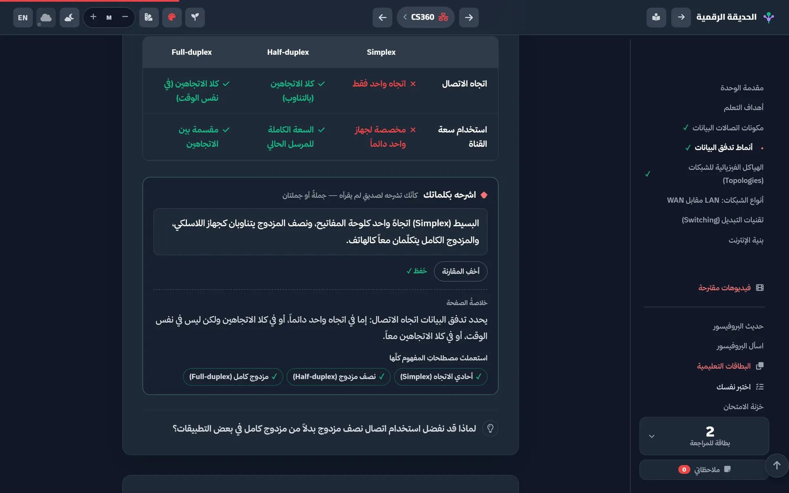
قيّمْ تذكّرك بخمس درجات، فتعود البطاقةُ قبل أن تنساها. وتقريرٌ بخريطة اثني عشر أسبوعاً يكشف البطاقاتِ التي تتسرّب منك.
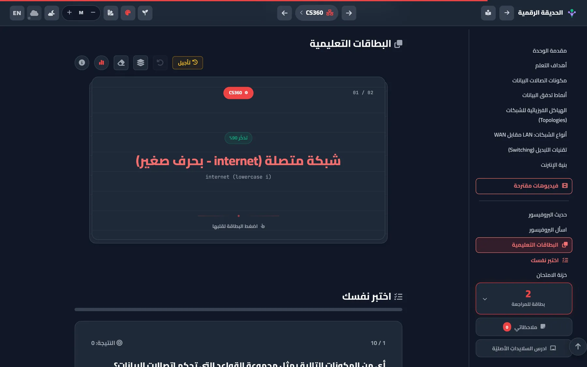
اختبارٌ لكلِّ وحدة، ولنصفيِّ كلِّ مادّةٍ ونهائيِّها سبعون سؤالاً وعشرةُ مقاليّة بمؤقّت، ثمّ «راجعْ أخطاءك» وحدها.
افتحها في الحديقة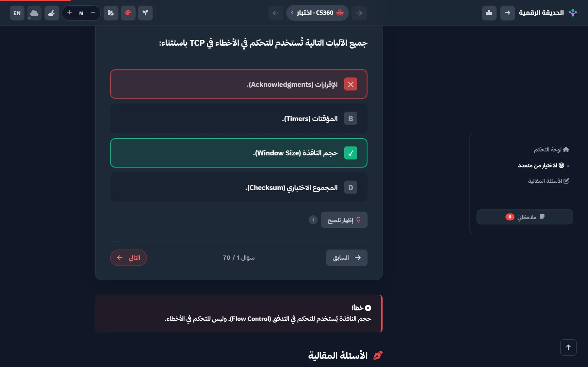
ابنِ دائرةً منطقيّةً فيُبنى جدولُ حقيقتها وخريطةُ كارنو. أو شغّلْ كوداً في ثلاثين لغة، ومعها 1,858 مثالاً جاهزاً.
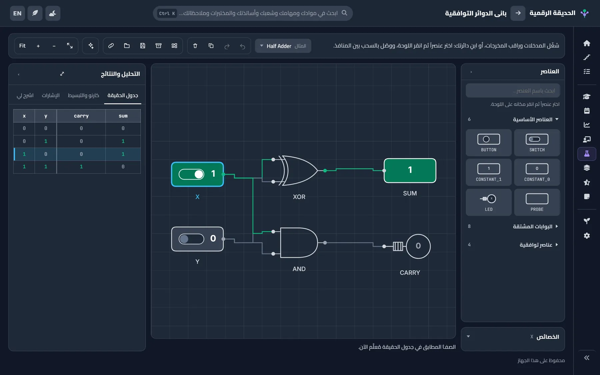
في كلِّ محاضرة
ملاحظاتٌ غنيّة، وسلايداتٌ تقرؤها وترسم عليها، وتسجيلٌ يعود إلى لحظة الشرح، وشرحُ الذكاء يصير صفحةً تذاكر منها.
عناوينُ وبطاقاتٌ وجداولُ ومعادلاتٌ وكودٌ ومخطّطات، وصناديقُ «مهمّ» و«تحذير». اضغطْ / لتضيف أيَّ شيء، وارسمْ فوق الصفحة بالقلم.
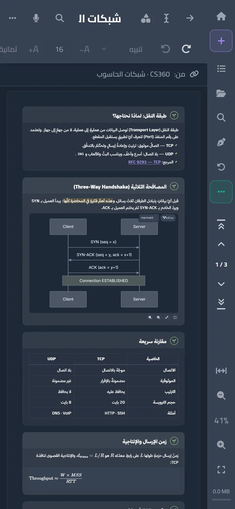
الصقْ نصَّ ماركداون فيصير عناوينَ وجداولَ ومعادلاتٍ وصناديق. والصقْ كودَ ميرمايد فيصير مخطّطاً حيّاً تكبّره وتعدّل تسمياته.
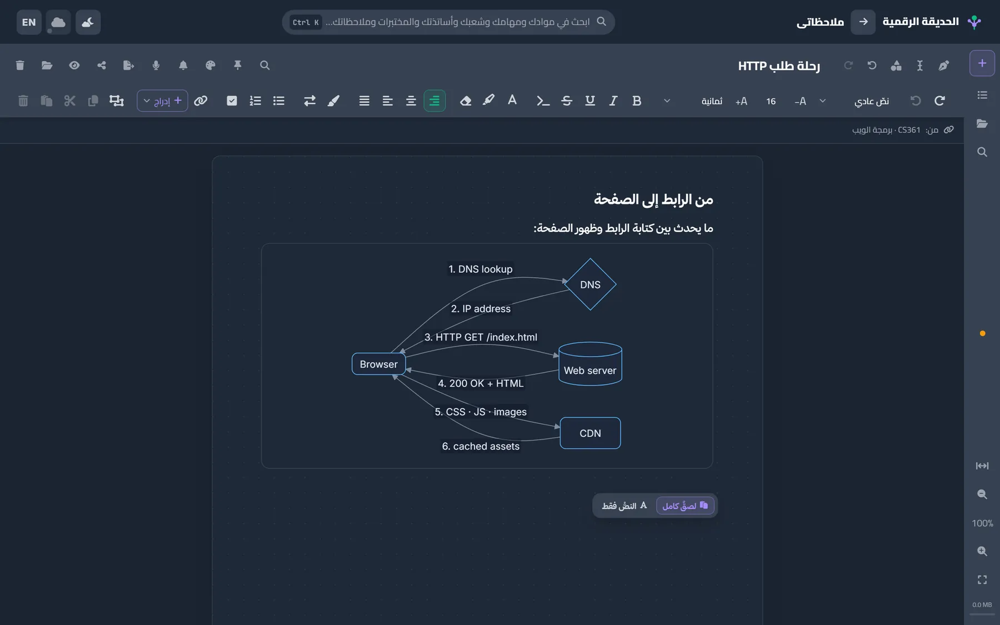
الصقْ رابطَ مشاركةٍ من ChatGPT أو Gemini أو Claude أو DeepSeek أو Qwen أو Kimi، فتُنظَّف ردودُه وتصير بطاقاتٍ ومسرداً ومساراتٍ داخليّة بثلاثة أنماط.
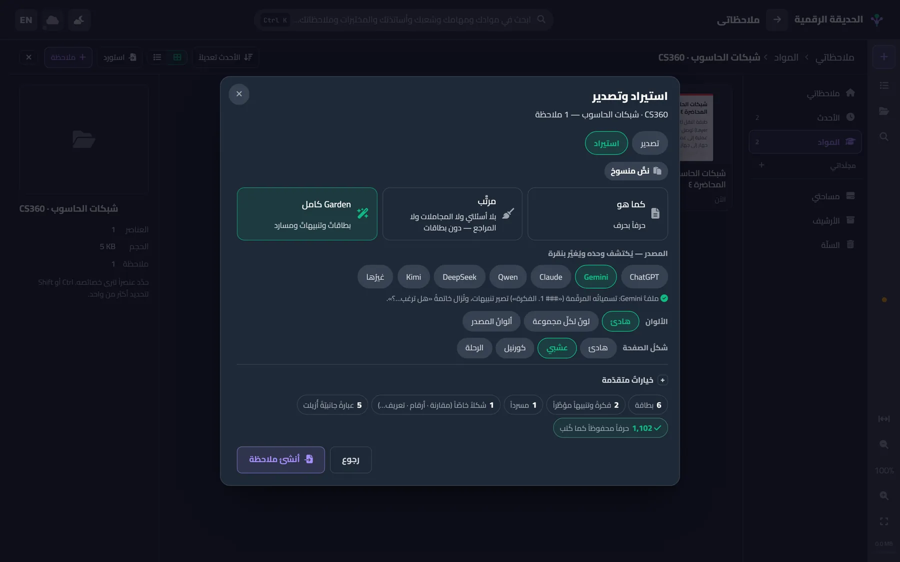
افتحْ ملفَّ المحاضرة من جهازك أو درايف ولو طال، واعرضه صفحةً أو صفحتين أو أربعاً، وابحثْ في نصّه.
افتحها في الحديقة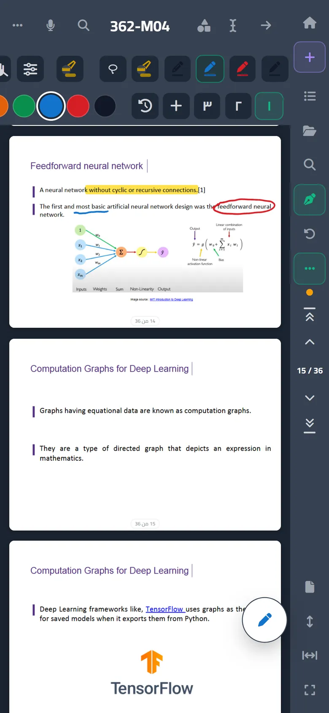
حدّدْ جملةً إنجليزيّةً فتُترجم، ومعها مصطلحاتُ الجملة نفسِها، ثمّ انسخْها إلى ملاحظتك.
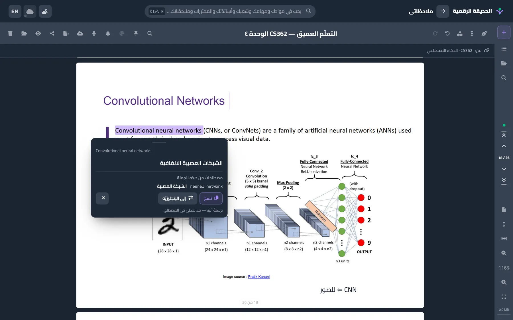
سلايداتٌ بيضاءُ في غرفةٍ مظلمة؟ اقلبْ ألوانَ الملفِّ كلِّه بنقرة، ويبقى رسمُك كما هو.
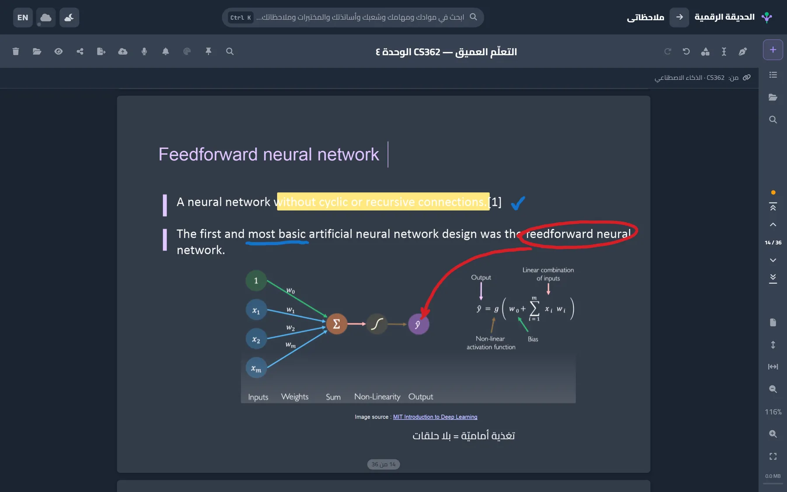
قلمٌ ومظلّلٌ يلتقط سطرَ النصّ، وممحاةٌ ذكيّة، ومنعُ لمس الكفّ، وأزرارُ قلمك تختار لها ما تشاء. والرسمُ ثابتٌ في مكانه مهما كبّرتَ أو صغّرت.
قُصَّ منطقةً من الصفحة بما رسمتَه عليها، ثمّ «انسخْ واشرحْ» فتفتح Qwen أو ChatGPT أو Gemini والصورةُ جاهزةٌ للصق.
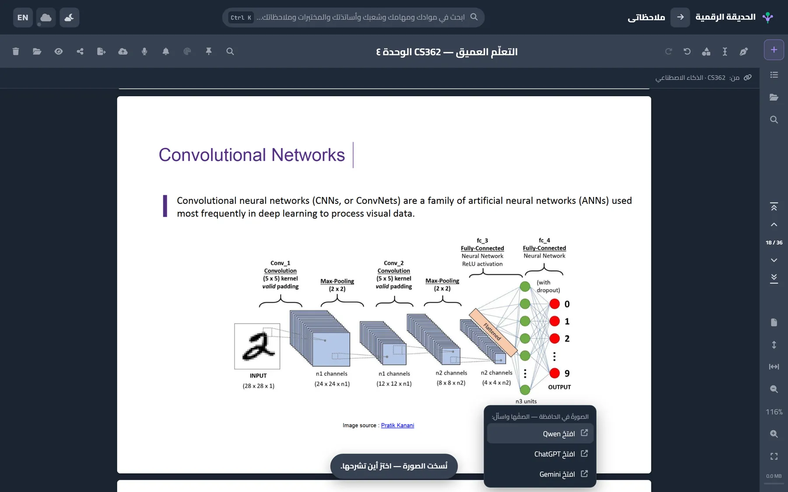
بنقرةٍ واحدة تُجمع كلُّ تظليلاتك وتعليقاتك في ملاحظةٍ مرتّبةٍ بالصفحات، وكلُّ سطرٍ يعيدك إلى صفحته.
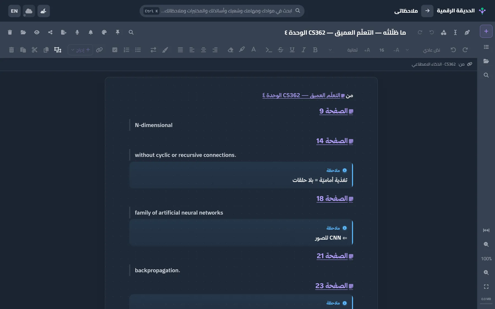
اسحبْ لتعيد الترتيب، ودوّرْ واحذفْ «3-7، 12» دفعةً، وأدرجْ من ملفٍّ آخر أو استخرجْ صفحاتٍ في ملاحظةٍ جديدة، والحبرُ يتبع صفحته. والأصلُ محفوظٌ تعود إليه متى شئت.
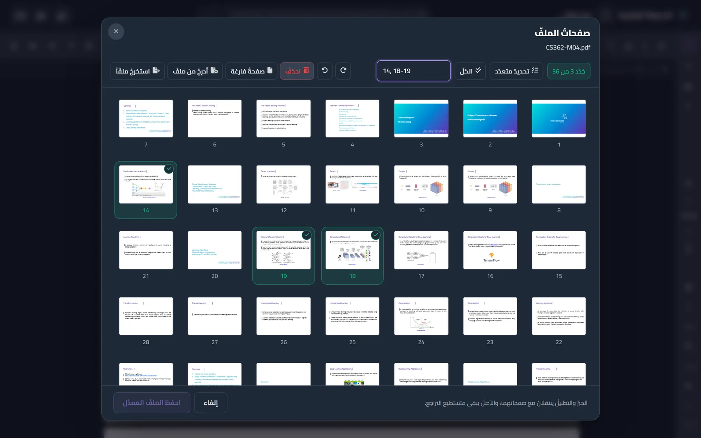
سجّلِ المحاضرة وأنت ترسم، أو أضِفْ تسجيلاً من جهازك. ثمّ انقرْ أيَّ خطٍّ رسمتَه واسمعْ ما قيل لحظةَ رسمه. والتسجيلُ يُحفظ كلَّ خمس ثوانٍ فلا يضيع إن أُغلقت الصفحة.
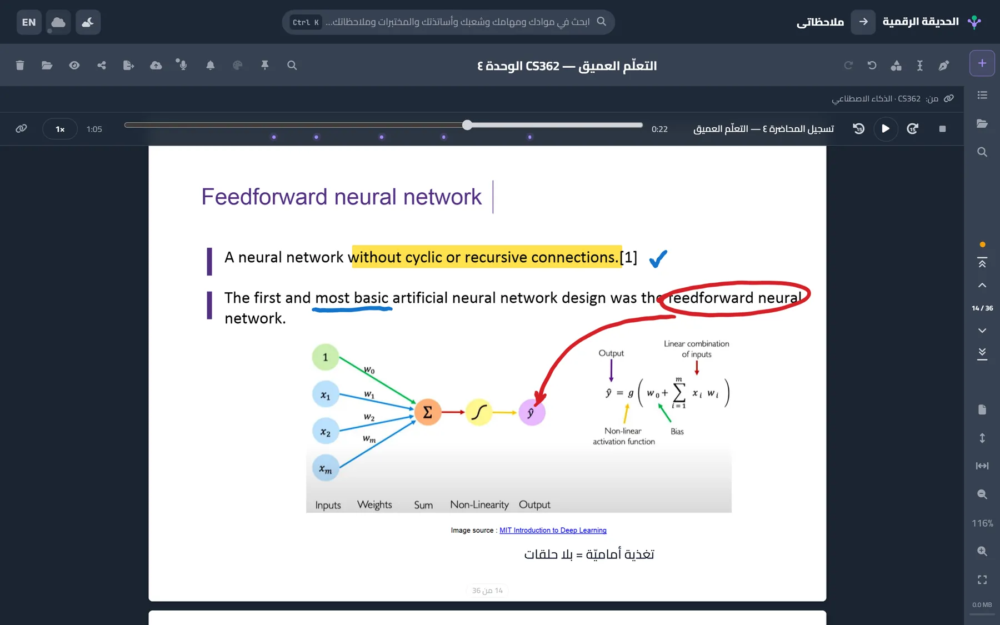
احفظِ الملفَّ والتسجيلَ في درايفك، وافتحْهما على جهازٍ آخر برسمك كما هو. وشاركْ ملاحظتك للقراءة أو ليأخذ زميلُك نسخةً يعدّلها، وأبطلِ الرابطَ متى شئت.
افتحها في الحديقة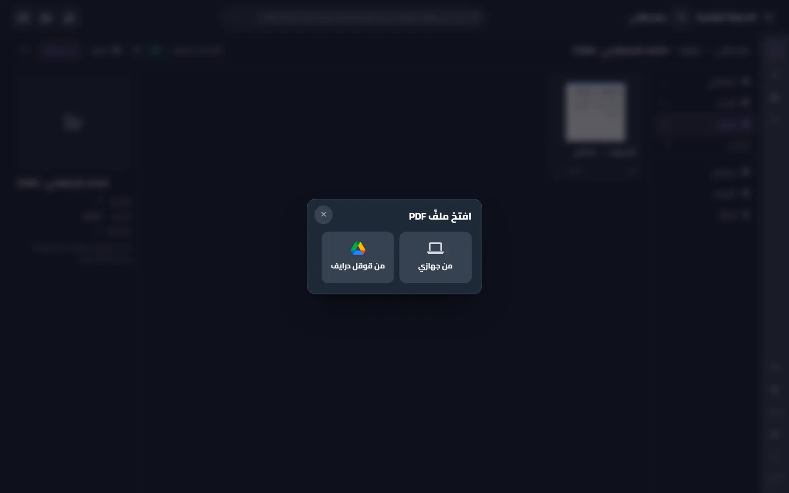
قبل النصفيّ وحتّى النهائيّ
معدّلُك بمقياس الجامعة من 4.00، وما يحتاجه هدفُك، وخطّةُ مذاكرةٍ تُبنى على مواعيد اختباراتك الحقيقيّة.
جرّبْ درجاتٍ لم تُعلن بعد، وشاهدْ أثرَها على معدّل الفصل والتراكميّ قبل أن تقع.
افتحها في الحديقة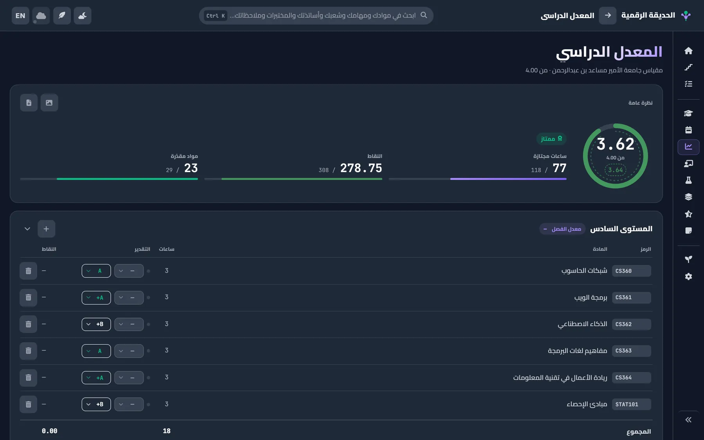
اكتبْ المعدّلَ الذي تريد التخرّجَ به فتعرف ما يلزمك في الساعات الباقية، وأين أنت من مرتبة الشرف. ومعالجُ الفصول يوزّع موادَّك القادمة بحدود الساعات والمتطلّبات.
افتحها في الحديقة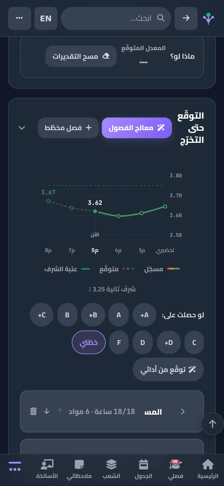
اخترِ الوحداتِ والأيّامَ وطولَ الجلسة، فتوزّع الخطّةُ المكثّفة الجلساتِ مع مراجعاتٍ متباعدة. وإن ضاق الوقت اقترحت حلولاً مجرَّبةً بدل أن تفشل بصمت.
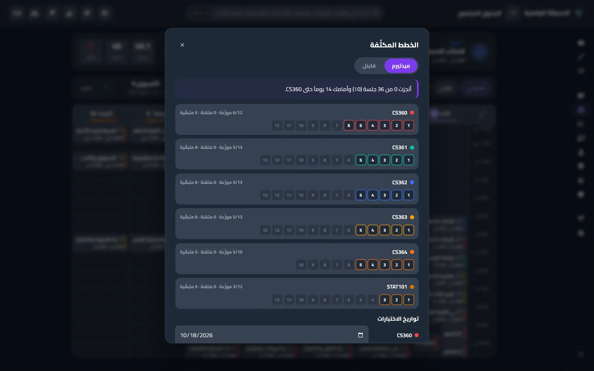
درجاتُك النهائيّة تدخل سجلَّك الأكاديميّ، ويُحفظ الفصلُ بموادّه وملاحظاته لتعود إليه متى شئت.
افتحها في الحديقة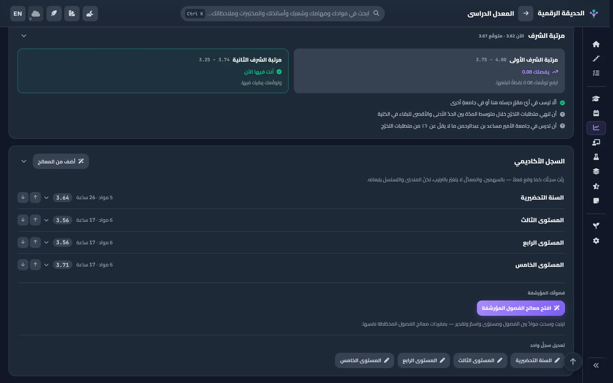
بعد آخر اختبار
تترك أثراً لمن بعدك، وتبدأ فصلك القادم بما تعلّمتَه عن نفسك.
قيّمْ أساتذتك على خمسة محاور، ورأيُك مجهولُ الاسم ومحفوظٌ تعدّله أو تسحبه متى شئت.
افتحها في الحديقة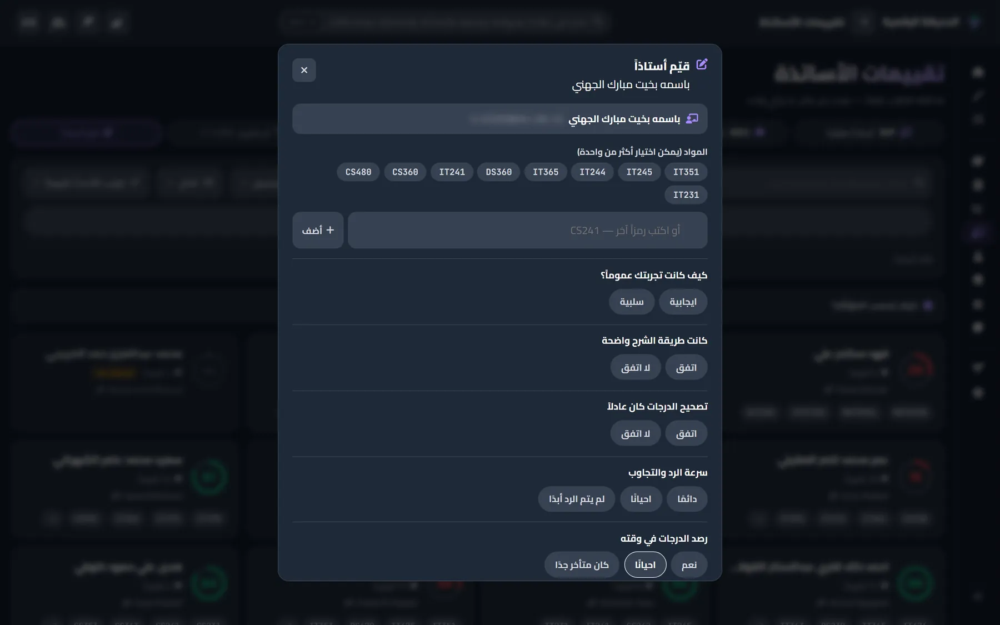
اربطْ جوالك برمزٍ يُمسح في ثوانٍ، بلا حسابٍ ولا كلمة سرٍّ إن شئت. وإن أردتَ حمايةَ حسابك فبريدٌ أو قوقل، ومفتاحُك يُحفظ مشفّراً بكلمة سرّك.
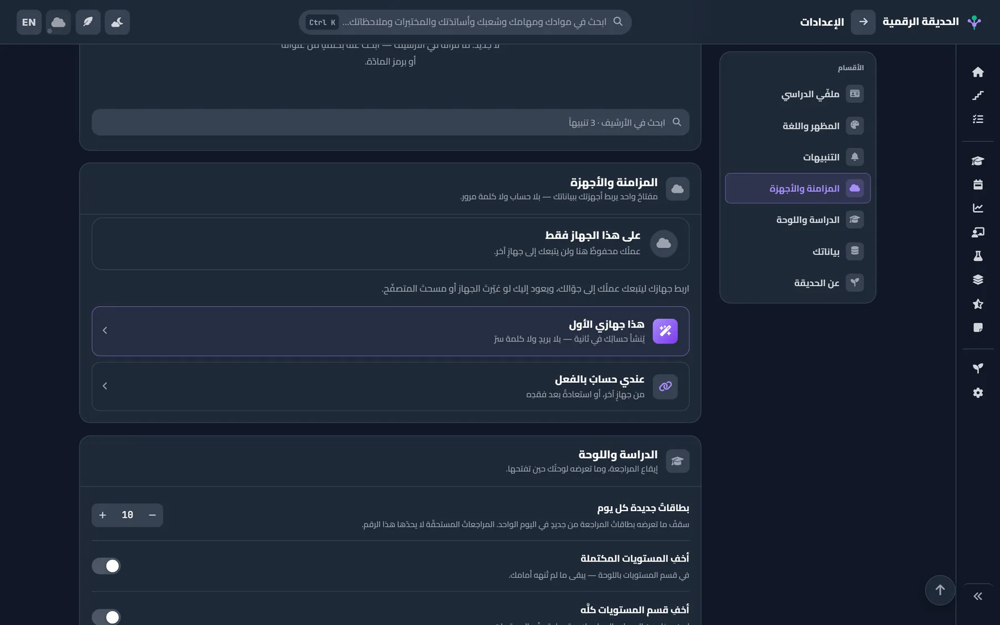
ما لا يعرفه كثيرون
مزايا موجودةٌ في كلِّ صفحة، لكنّها خلف نقرةٍ يمنى أو حرفٍ على لوحة المفاتيح. ولكلٍّ منها طريقُه.
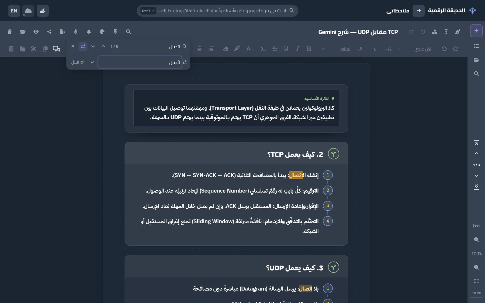
ومعه زرٌّ يستبدل كلَّ المطابقات دفعةً واحدة.
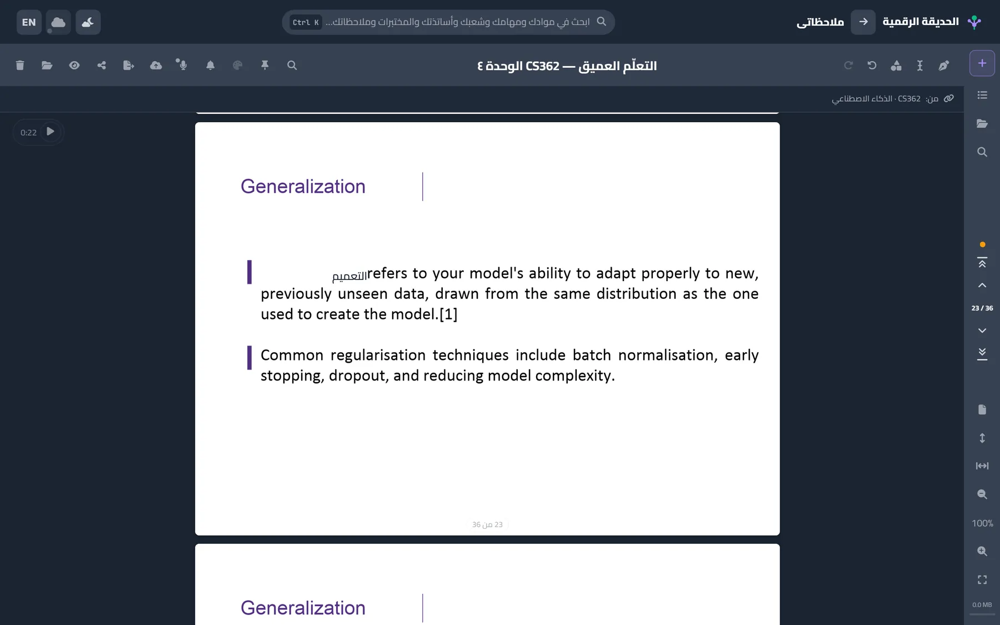
صحّحْ خطأً في السلايد أو أخفِ الإجابة لتختبر نفسك.
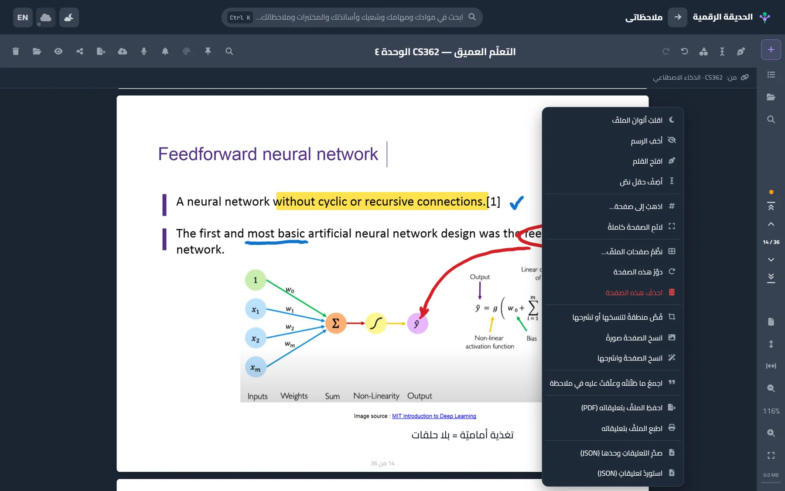
يفتحه أيُّ قارئٍ آخر بتظليلك ورسمك كما هما.
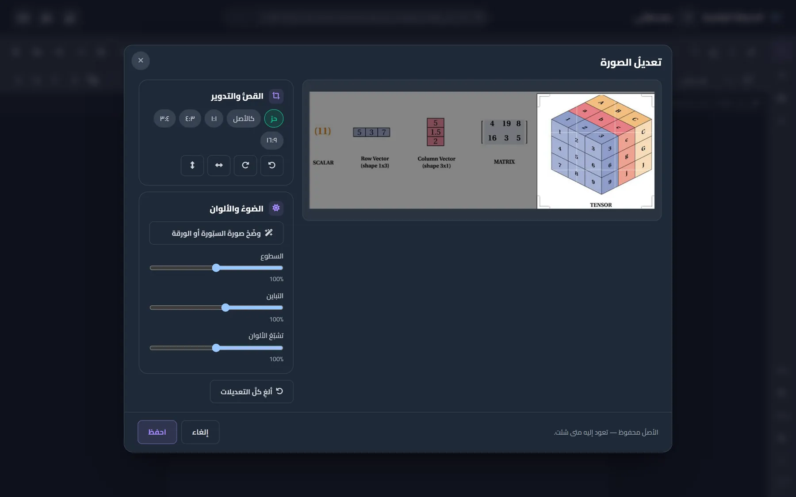
صوّرْ السبّورةَ بجوالك، والمحرّرُ يبيّض الخلفيّة ويقوّي الخطّ.
موادُّك ومهامُّك وشعبُك وأساتذتُك ومفاهيمُ المنهج وملاحظاتُك. واكتبْ رقمَ شعبةٍ فتفتحها مباشرة.
T يبدّل الثيمَ، وL يقلب اللغة، و+ و− للخطّ، من أيِّ صفحة.
كودُ المخطّط من أيِّ مكانٍ يصير رسماً حيّاً تكبّره وتعدّل تسمياته.
اكتبِ اسمَ الملاحظة بين قوسين مربّعين مزدوجين في الماركداون الملصوق، فيصير رابطاً إليها. وإن لم توجد عُرض عليك إنشاؤها.
اضغطْ «سجّلْ زرّاً» ثمّ زرَّ القلم، واجعله ممحاةً أو تحديداً أو مظلّلاً.
رمزُ المادّة في اسم الملفّ يقترح مجلّدَه، فتُفرز سلايداتُ الفصل كلُّها في ثوانٍ.
جرّبهاانقلِ المحاضرةَ بإصبعك، وغيّرْ مدّتها، وكرّرها في يومٍ آخر، واطوِ الساعاتِ الفارغة.
أسابيعُ أو أشهرٌ أو الخطّةُ المكثّفة، بثيمٍ ورقيٍّ بلا خلفيّات.
ابحثْ عن رمزٍ لا شعبةَ له بعد، فيعرض عليك متابعته حتّى تنزل.
انسخْ كوداً من أيِّ وحدة، فيسألك إن كنت تريد تجربته في مختبر اللغات.
جرّبهاانقرْ الوحدةَ في صفحة المادّة واخترْ «أتقنتُها»، فيُحسب إتقانُك كما تراه أنت.
لا يصلك تنبيه؟ الإعداداتُ تريك أين انقطعت السلسلة: الجهاز أم المتصفّح أم الإذن.
جرّبْ هنا
بالفأرة أو بإصبعك أو بقلم جهازك. ضعْ دائرةً حول الموجّه، وظلّلِ المصطلحَ الذي تريد مراجعته.
عنوانُ IP يحدّد الوجهة عبر الشبكات، وعنوانُ MAC يحدّد الجهاز على الوصلة المحلّيّة.
«الإشارةُ التناظريّة والرقميّة» من الوحدة الأولى. يُقرأ الشرحُ من الكاش المنشور، فلا يُطلب توليدٌ جديد.
سيظهر الشرحُ هنا كما يراه الطالبُ داخل الوحدة.
كلُّ شيءٍ في مكانٍ واحد
بلا حسابٍ إلزاميّ، ويعمل بلا إنترنت، وبالعربيّة والإنجليزيّة.
ادخلِ الحديقة